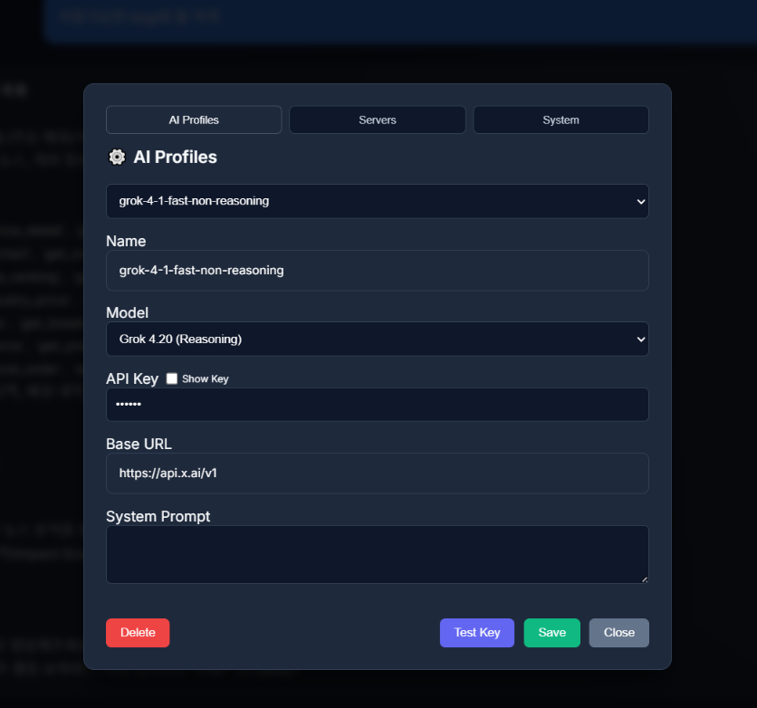

Product Walkthrough
Visualizing the ASDK Experience

Main Intelligence Hub: High-performance chat interface with real-time persona and profile selection. Perfect for observing how different configurations impact AI reasoning.

Expert Persona Control: Manage your AI profiles and system prompts. Configure model-specific behaviors and API keys in a centralized diagnostic interface.

MCP Clinical Setup: Standardized diagnostic view for MCP servers. Instantly identify connection health and available toolsets in your local environment.